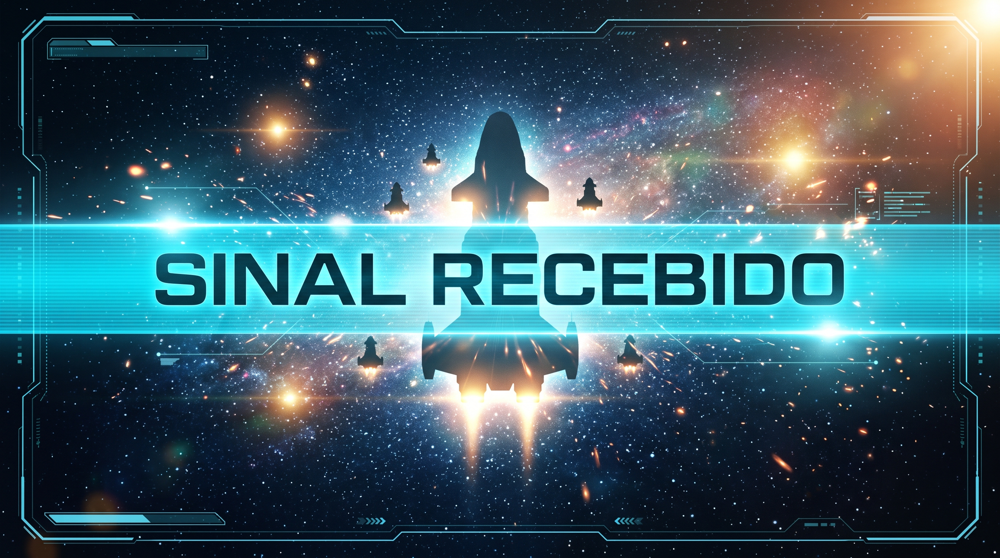

Sinal Recebido pela Frota

"Sinal recebido em 406,0 MHz. Equipe de resgate a caminho. Tempo estimado: 4 horas."
Você transmitiu na frequência orbital correta antes que a reserva de ar chegasse ao fim. O oxigênio restante é suficiente até a acoplagem da nave de socorro.